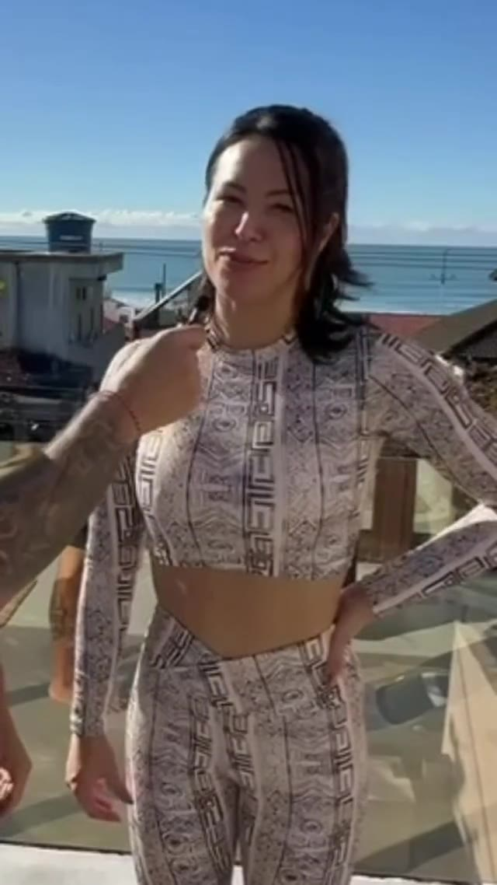
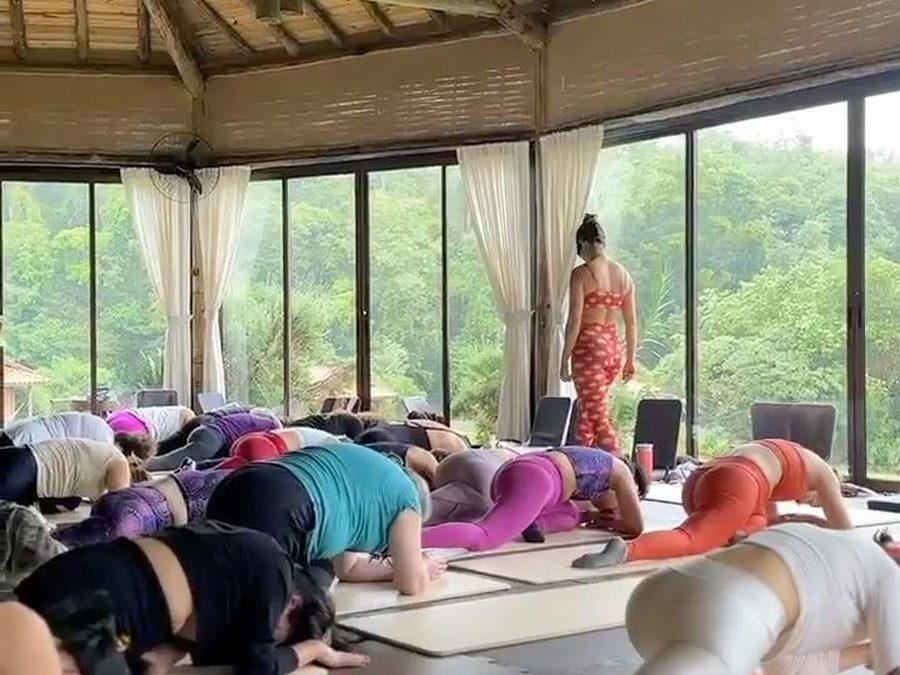

7 dias de garantia. Se não for para você, devolvemos 100%.
✦ QUEM CONDUZ ✦
Milhares de pessoas já praticaram com a Tata
Um dos nossos eventos presenciais na praia
Milhares
de pessoas em aulas, eventos e retiros
+10 anos
de prática e de ensino
Brasil, Bali e Tailândia
onde já praticou e ensinou
Turmas ativas
presenciais, além da plataforma online
✦ NA PRÁTICA ✦
O que você faz numa semana comum
Nada de teoria antes da hora. Você abre, pratica e segue com o dia.
Aulas de 15 a 50 minutos
Para encaixar antes do trabalho, no intervalo ou no fim do dia. Você escolhe pelo tempo que tem, não pelo tempo que gostaria de ter.
Respiração e meditação guiadas
Práticas curtas para as noites em que a cabeça não desliga, conduzidas do começo ao fim.
Sequências para pescoço, ombros e lombar
Pensadas para quem passa o dia sentada e sente o corpo travar. Movimentos suaves, sem exigir flexibilidade.
Uma trilha em ordem
Você não precisa decidir o que praticar. A sequência já está montada, com progressão, do primeiro dia em diante.
✦ PARA QUEM É ✦
O Yoga Galáctico é para você que...
Nunca praticou yoga
Quer começar em casa
Tem pouco tempo no dia a dia
Busca mais mobilidade e flexibilidade
Quer criar uma rotina de bem-estar
Procura aulas guiadas, com acompanhamento
✦ O QUE NINGUÉM MAIS FAZ ✦
Você não pratica sozinha.
No Plano Encontro, sua jornada começa com um Encontro de Boas-vindas ao vivo e individual com a Tata. Ela conversa sobre o seu momento, monta o seu Plano Galáctico e diz exatamente por onde começar, quais práticas priorizar e como construir a rotina.
E não termina aí. Todo mês tem um check-in ao vivo com a Tata para acompanhar sua evolução e ajustar o caminho.
Pergunta justa, e a resposta honesta é que existe muito conteúdo bom e gratuito por aí, inclusive da própria Tata.
O que o gratuito não dá é ordem. Você abre o aplicativo, escolhe entre mil vídeos, pratica dois dias, some por duas semanas e volta do zero. A dificuldade quase nunca foi encontrar uma aula. Foi manter a prática viva.
Aqui você recebe uma sequência montada, na ordem certa, com progressão. E alguém que sabe em que ponto você está.
Conteúdo gratuito
Catálogo infinito, sem ordem definida
Você decide o que praticar todo dia
Sem progressão entre uma aula e outra
Ninguém percebe se você parou
Yoga Galáctico
Trilha em ordem, montada por quem ensina
Já está decidido, é só apertar o play
Progressão real, do primeiro dia em diante
Contato direto com a Tata no Plano Encontro
QUEM JÁ VIVEU, CONTA
O que as alunas da Tata dizem
Palavras reais de quem já praticou com a Tata Vidal, de médicas a quem nunca tinha pisado num tapete de yoga.
arraste para ver mais
"
★★★★★
Uma aula galáctica que vou guardar pra sempre no coração. Algumas coisas são pra viver profundamente, foi 100% entrega pro momento. Não tem como explicar.
J
Jack Pasqualotto
Aluna
"
★★★★★
O yoga permite o equilíbrio entre corpo, mente e espírito. Impossível não sair de uma prática se sentindo melhor do que antes. Gratidão por cada prática que me faz ser 1% melhor.
A
Aline Castanho
Aluna
"
★★★★★
Já participei de muitos retiros e falo com propriedade: esse foi o mais marcante. Você é diferenciada, uma nova referência pra mim sobre yoga, e olha que sou "sommelier" de aula de yoga!
F
Fabiana Nardi
Aluna
"
★★★★★
O yoga te desafia todo momento, te ensina a ter equilíbrio, flexibilidade, a se concentrar no presente e a respirar de forma consciente. Esse aprendizado a gente leva do tapete pra vida.
N
Dra. Natália
Médica ginecologista
"
★★★★★
Pude me conectar com todo o poder do yoga. É sobre sentir, nossos pensamentos, nosso foco, nossa flexibilidade. Cada prática é um desafio e uma superação. Gratidão à minha mestre e professora.
M
Marlian Catarina
Aluna
"
★★★★★
Achava que yoga era só um exercício diferente. Com o tempo, virou um meio de me conectar com tudo, uma prática espiritual e mental que trouxe equilíbrio pra minha vida. Hoje não me imagino sem o yoga.
J
Junior Peron
Aluno
"
★★★★★
Muito mais que flexibilidade, a yoga mudou minha vida em todos os aspectos, me trouxe mais consciência, mais determinação, mais espiritualidade, e me conectou com minha fé.
C
Carol Bertoli
Aluna
"
★★★★★
Indico o yoga na gestação: trabalha equilíbrio, força, flexibilidade, fortalecimento perineal, controle da respiração e bem-estar. Respiração fluida, mente controlada, corpo equilibrado.
F
Dra. Fabi Zarske
Médica ginecologista
"
★★★★★
O corpo realiza o que a mente acredita ser capaz. O yoga me proporcionou melhor respiração, mais concentração, menos ansiedade e mais autorregulação, isso me ajuda até na tarefa de ser psiquiatra.
A
Andréa
Médica psiquiatra
Ouça direto de quem viveu
Depoimentos reais, em vídeo, de alunas e alunos da Tata Vidal.
Junior Peron

Aline de Freitas
Marlian Catarina
SUA GUIA GALÁCTICA
Tata Vidal
A professora que transformou a própria vida através do yoga e agora compartilha esse caminho com você.
Sou Tatá Vidal. Antes do yoga, construí mais de 20 anos de carreira corporativa, boa parte na indústria farmacêutica, até que esse caminho deixou de fazer sentido.
Foi numa fase de crises pessoais que encontrei o yoga, e o que começou como prática física virou uma jornada de autoconhecimento. Ao longo de mais de 10 anos, me formei no Brasil e aprofundei minha prática em retiros e imersões em Bali e na Tailândia.
Foi dessa caminhada que nasceu o Yoga Galáctico: uma metodologia que integra Corpo, Mente e Espírito para ajudar pessoas a desenvolverem força, equilíbrio e conexão interior.
Cada aula e prática aqui carrega mais de uma década de vivência real, porque o papel de uma professora não é mostrar o caminho perfeito, mas iluminar o caminho que já percorreu.
Seja bem-vindo ao Yoga Galáctico.

TUDO INCLUÍDO NA ASSINATURA
Tudo o que você encontra na plataforma
Cada módulo foi criado para conduzir você por uma jornada progressiva de transformação, trabalhando Corpo, Mente e Espírito de forma integrada.
Comece pelos fundamentos, aprofunde sua prática e descubra novas formas de se conectar consigo mesma através do Yoga Galáctico.
Clique em cada módulo para conhecer os detalhes
O primeiro passo da sua jornada.
Aqui você compreenderá os fundamentos do Yoga Galáctico, entenderá como corpo, mente e espírito se conectam na prática e aprenderá a construir uma prática consistente.
Boas-vindas à jornada Yoga Galáctico
Como corpo, mente e espírito se conectam na prática
Os pilares que sustentam Corpo, Mente e Espírito
Como criar sua jornada personalizada
Orientações para aproveitar ao máximo a plataforma
Uma jornada cuidadosamente construída para quem deseja iniciar no yoga de forma acolhedora e consciente.
Você aprenderá a respirar, movimentar-se e desenvolver presença através de práticas progressivas.
Preparando seu ambiente de prática
Primeiros fundamentos do yoga
Olhar para dentro e despertar para si
Yoga restaurativo
Mente forte, corpo forte
Sequências progressivas para iniciantes
Aula especial para fortalecimento e alívio da lombar
Práticas especiais gravadas em cenários inspiradores de Bali e Tailândia.
Uma experiência imersiva que une movimento, presença e conexão interior.
Primeiros passos da jornada interior
Saudação ao Sol em Bali
Abertura de peito e expansão energética
Flow completo de Bali
Abertura de quadril e liberação emocional
Experiências de prática em ambientes naturais
Um espaço dedicado ao silêncio interior, à presença e ao desenvolvimento da consciência.
Práticas guiadas para diferentes momentos da sua vida emocional.
Meditação para ansiedade
Meditação da Lua Cheia
Meditações para amor-próprio
Meditações para prosperidade
Meditações para saúde e bem-estar
Práticas de presença e conexão interior
A respiração como ponte entre corpo, mente e espírito.
Aprenda técnicas tradicionais capazes de ampliar presença, equilíbrio e vitalidade.
Pranayama de Presença
Nadi Shodhana
Kapalabhati
Técnicas respiratórias para equilíbrio emocional
Práticas para expansão da energia vital
Exercícios para aprofundar sua conexão interior
Práticas mais dinâmicas para quem deseja desenvolver força, resistência, mobilidade e energia através do movimento consciente.
Despertar da Energia
Força Interior
Energia de Expansão
Flows dinâmicos e energizantes
Sequências para fortalecimento corporal
Movimento consciente e presença em ação
Aprenda com profundidade as principais posturas do yoga através de explicações detalhadas, progressões e ajustes.
Ideal para quem deseja evoluir com mais segurança e consciência corporal.
Fundamentos das posturas
Técnicas de alinhamento
Progressões para posturas desafiadoras
Ajustes e adaptações
Fortalecimento específico
Desenvolvimento gradual da prática
Uma jornada de transformação para corpo, mente e espírito
Um aplicativo próprio, com um ritual guiado para cada um dos 21 dias: você recebe uma Carta Galáctica sorteada especialmente para aquele dia, ouve um áudio guiado, faz uma prática complementar e registra sua jornada num diário pessoal. Um dia de cada vez, no seu ritmo — o próximo só libera quando você completa o atual.
Através de meditações guiadas, reflexões, exercícios e desafios diários, você irá desenvolver hábitos que promovem mais equilíbrio, clareza mental, conexão espiritual e bem-estar.
Não é apenas um programa. É um convite para despertar uma nova versão de si mesmo.
O que você vai trabalhar ao longo da jornada?
Medos e bloqueios emocionais
Autenticidade e amor-próprio
Prosperidade e relação com o dinheiro
Propósito e direção de vida
Consciência dos padrões que limitam seu crescimento
Equilíbrio entre corpo, mente e espírito
Construção de hábitos que sustentam sua evolução
Mais do que uma plataforma de aulas, o Yoga Galáctico é uma jornada contínua de transformação.
Novas práticas, experiências e conteúdos serão incorporados ao longo do tempo para acompanhar a evolução da sua caminhada.
✦ O QUE SUSTENTA A PRÁTICA ✦
A metodologia por trás: a Tríade Galáctica
Toda prática aqui trabalha três dimensões ao mesmo tempo: o corpo que sustenta, a mente que desacelera e o espírito que reconecta. É isso que separa uma sequência de exercícios de uma jornada real de transformação.
CorpoMenteEspírito
✦ ESCOLHA COMO COMEÇAR ✦
Dois jeitos de praticar
A mesma trilha da Tata nos dois. A diferença é se você quer praticar no seu ritmo ou com ela acompanhando de perto.
Escolha a forma que faz mais sentido para o seu momento. Você pode começar pelo Essencial e evoluir para o Encontro quando quiser.
7 dias de garantia. Se não for para você, devolvemos 100%.
Pagamento seguro via Kiwify
Os dois planos são mensais e podem ser cancelados a qualquer momento, sem multa e sem burocracia.
100% DINHEIRO DE VOLTA
7 DIAS
GARANTIDO
Decida com calma...
Você não precisa decidir com certeza agora. Só precisa se permitir experimentar.
Acreditamos tanto na transformação que o Yoga Galáctico traz (para o Corpo, para a Mente e para o Espírito) que oferecemos uma garantia completa de 7 dias.
Se por qualquer motivo você entrar na plataforma e sentir que não é para você, é só nos avisar dentro dos primeiros 7 dias e devolveremos 100% do seu dinheiro. Sem perguntas, sem burocracia, sem julgamento.
Sem letras miúdas. Sem burocracia. Sem culpa.
Perguntas Frequentes
Qual a diferença entre os dois planos?+
O conteúdo gravado é o mesmo nos dois: a biblioteca completa, a trilha em ordem, as meditações e as respirações. O Plano Encontro acrescenta o contato direto com a Tata, com o Encontro de Boas-vindas individual, o Plano Galáctico feito para o seu momento e um check-in mensal ao vivo. O Despertar Galáctico já vem incluso no Encontro; no Essencial ele pode ser adquirido separadamente.
Nunca fiz yoga. Consigo acompanhar?+
Sim. A trilha começa do zero, com aulas curtas e explicação de cada movimento. Você não precisa saber nada antes de começar, e é justamente por isso que existe uma ordem: cada prática prepara a seguinte.
Preciso ser flexível?+
Não. Flexibilidade é resultado da prática, não requisito para começar. As aulas foram pensadas para corpos reais, com variações mais suaves em cada postura sempre que necessário.
Quanto tempo por dia eu preciso ter?+
As aulas vão de 15 a 50 minutos. Dá para manter a prática viva com 15 minutos por dia, e é assim que a maioria começa. A regularidade importa muito mais que a duração.
Preciso de tapete ou algum equipamento?+
Não é obrigatório. Um tapete aumenta o conforto, mas as aulas foram pensadas para o mínimo de recursos. Seu corpo é a principal ferramenta.
Consigo praticar pelo celular?+
Sim. A plataforma funciona no celular, no tablet, no computador e na TV. Basta ter acesso à internet.
Posso cancelar quando quiser?+
Pode. Os dois planos são mensais e o cancelamento é feito a qualquer momento, sem multa e sem burocracia.
Como funciona a garantia de 7 dias?+
Você entra, conhece a plataforma e pratica. Se sentir que não é para você, basta avisar dentro dos primeiros 7 dias e devolvemos 100% do valor. Sem perguntas e sem julgamento.
Comece hoje, no seu ritmo.
Uma prática guiada, na ordem certa, com alguém acompanhando de perto. Tudo que você precisa fazer é dar o primeiro passo.